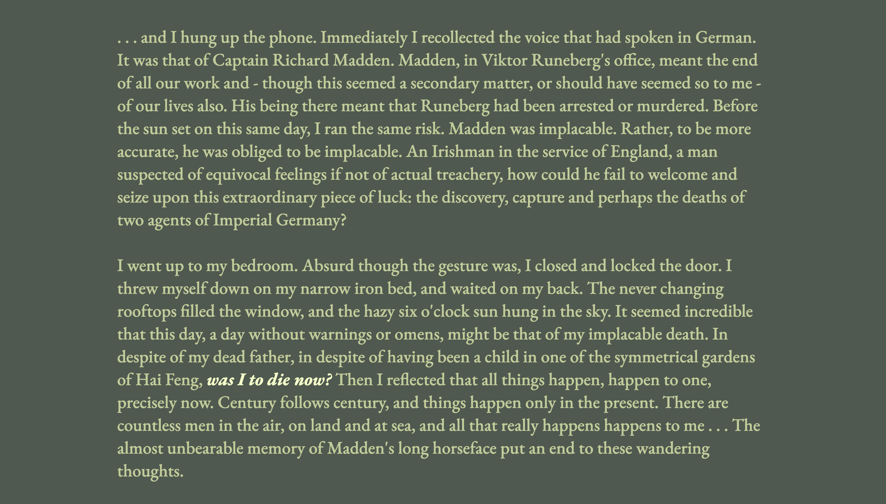
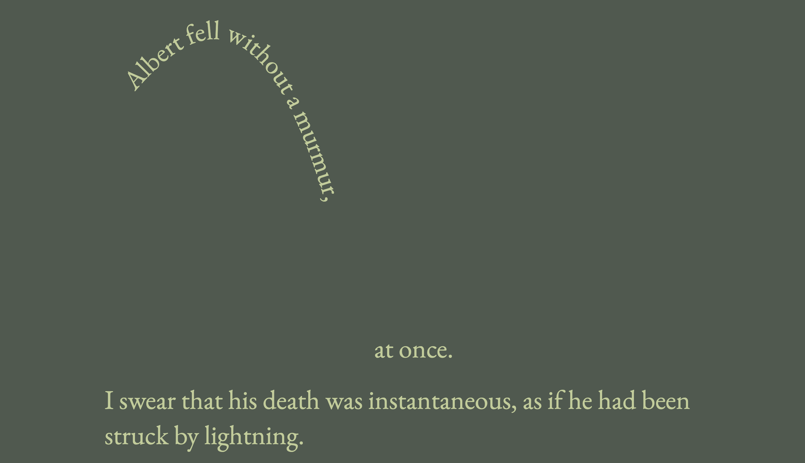

Stories as Networks Case Study
The Garden of Forking Paths by Jorge Luis Borges
Sketches
Concept
Narrated by Yu Tsun
He is a spy working for Germany
Yu Tsun is on a mission, and while he is doing this, he goes to meet Stephen Albert, who talks to him about Yu Tsun’s grandfather, Ts’ui Peng
Ts’ui Peng has written a book about bifurcating time and parallel universes (The Garden of Forking Paths)
“[Ts’ui Peng] did not think of time as absolute and uniform. He believed in an infinite series of times, in a growing, dizzying net of diverging, converging and parallel times.”
Yu Tsun kills Albert as a way of announcing that the city of Albert is under attack.
Concept
Dark green for stable storytelling
Different smaller interactions on each page (hover, choose your own path, etc)
Bifurcating paths for the reader to choose from, inspired by the story's bifurcation of time

Typographic choices
EB Garamond - serif
This short story was set during WWI — using a serif allowed me to tell this story in a more “serious” / less modern way.
Usage of different weights of the same typeface throughout the site
Usage of shape in order to add more interest to the story
